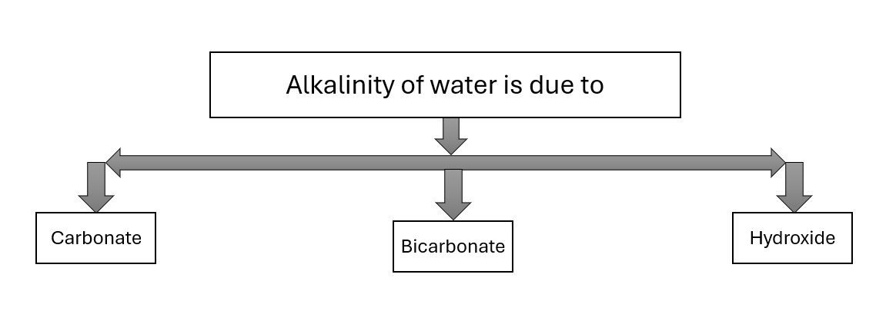
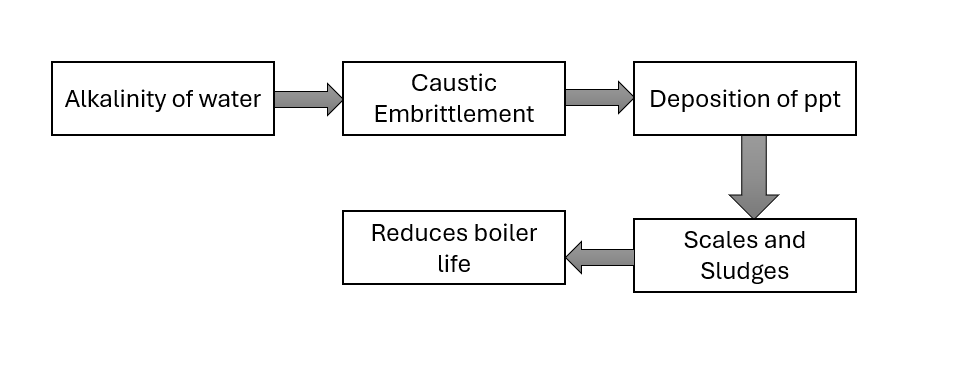
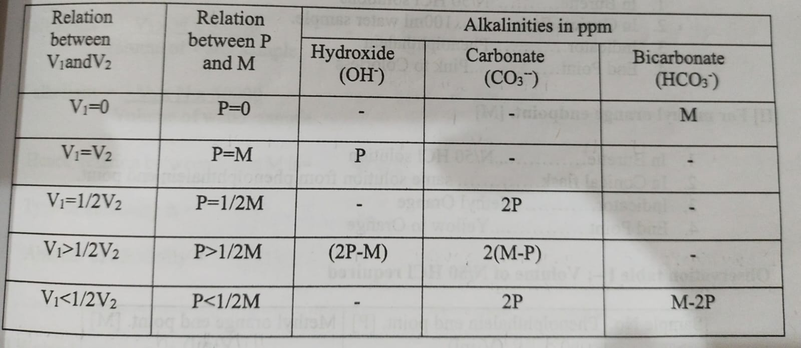
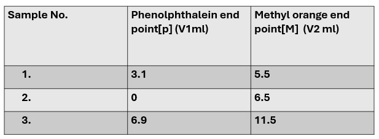
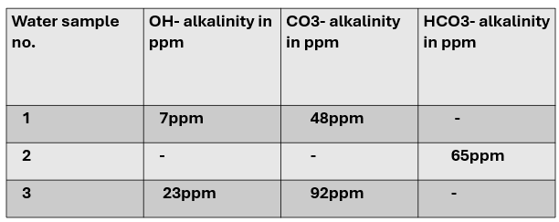

To determine alkalinity of water sample.
Definitions of acids and bases,their types,Neutralization reaction and indicators.
The alkalinity of water is mainly due to the hydroxides,carbonates and bicarbonates.

Use of highly alkaline water in boiler may lead to caustic embrittlment and deposition of precipitates and sludge in boiler tubes and pipes.

Hence.it is essential to have an idea about the nature and extent of alkalinity.This can be determined by performing neutralization titration between alkaline water sample Vs standard acid solution.From the amount of std.acid used exact amount and nature of alkalinity is found out.

Intellectual Skills:
Motor Skills:
Burette, pipette,conical flask,100ml measuring cylinder,etc.
Chemicals:
Water sample,phenolphthalein,N/50 HCl,methyl orange.
Take 100 ml of water sample to be tested in a titration flask.To it, add 2 to 3 drops of phenolphthalein and titrate the sample against standard N/50 HCl until the phenolphthalein end point [P].To this above same solution, add 2 to 3 drops of methyl orange, continue the titration. until the sharp color changes from yellow to red.Note the total reading as methyl orange end point [M].
(I) For phenolphthalein end point[P]
(II) For methyl orange end point[M]
Observation table I: Volume of N/50 HCl required

Alkalinity is expreesed as parts per million in terms of CaCO3 as 1000ml of 1N HCl=50gm of CaCO3 Determine alkalinity in water sample in mg/lit(ppm) for phenolphthalein alkalinity P(considering V1) in ppm Methyl orange alkalinity M(considering V2) in ppm.
1. Water sample no.1:
V1 = 3.1ml , V2 = 5.5ml
P alkalinity = V1*N*50000/Volume of water sample = 3.1*0.02*50000/100 = 31 ppm
M alkalinity = V2*N*50000/Volume of water sample = 5.5*0.02*50000/100 = 55 ppm
Hence,relation between P and M is = P>1/2M
Type of alkalinity is = Carbonate and Hydroxide Alkalinity
Amount of alkalinity = Carbonate Alkalinity = 2(M-P) = 2(55 - 31) = 48 ppm
Amount of alkalinity = Hydroxide Alkalinity = (2P-M) = (2*31 - 55) = 62 - 55 = 7 ppm
2. Water sample no.2:
V1 = 0ml , V2 = 6.5ml
P alkalinity = V1*N*50000/Volume of water sample = 0 ppm
M alkalinity = V2*N*50000/Volume of water sample = 6.5*0.02*50000/100 = 65 ppm
Hence,relation between P and M is = P=0
Type of alkalinity is = Bicarbonate Alkalinity
Amount of alkalinity = M = 65 ppm
3. Water sample no.3:
V1 = 6.9ml , V2 = 11.5ml
P alkalinity = V1*N*50000/Volume of water sample = 6.9*0.02*50000/100 = 69 ppm
M alkalinity = V2*N*50000/Volume of water sample = 11.5*0.02*50000/100 = 115 ppm
Hence,relation between P and M is = P>1/2M
Type of alkalinity is = Hydroxide and Carbonate Alkalinity
Amount of alkalinity = Hydroxide alkalinity = (2P-M) = (2*69 - 115) = 23 ppm
Amount of Alkalinity = Carbonate alkalinity = 2(M-P) = 2(115 - 69) = 92 ppm

1. Which salts make water alkaline?
Salts make water alkaline (basic) when they come from a strong base + weak acid. Common salts that make water alkaline:
2. Why HCO3- and OH- alkalinity together does not exit?
OH⁻ (strong base) reacts with HCO₃⁻ (weak acid).This reaction removes HCO₃⁻ and forms CO₃²-
HCO₃⁻ + OH⁻ → CO₃²⁻ + H₂O
If OH⁻ is present (high pH) → all bicarbonate (HCO₃⁻) gets converted into carbonate (CO₃²⁻).
So HCO₃⁻ and OH⁻ cannot exist together in measurable amounts.
3. What are the types of alkalinities?
alkalinity is mainly due to three types of ions present in water. So, the types of alkalinity are:
1. Hydroxide Alkalinity (OH⁻ alkalinity)
2. Carbonate Alkalinity (CO₃²⁻ alkalinity)
3. Bicarbonate Alkalinity (HCO₃⁻ alkalinity)
4. What are the implications of using strongly alkaline water in boiler?
Using strongly alkaline water in a boiler can cause several serious operational problems:
1. Caustic embrittlement
2. Scale formation
3. Foaming and priming
4. Corrosion
5. Sludge formation
5. How alkalinity is expressed?
Alkalinity is expressed in terms of equivalent calcium carbonate (CaCO₃).
Standard expression:
mg/L as CaCO₃ (most common)
Sometimes written as ppm as CaCO₃ (1 ppm ≈ 1 mg/L)
6. What is the type of alkalinity if P=1/2M?
In alkalinity titration
P = Phenolphthalein alkalinity
M = Total (methyl orange) alkalinity
Given:
P=1/2M
This condition indicates only carbonate alkalinity (CO₃²⁻) is present.
7. What is the relationship between P and M,if water contains alkalinity due to only carbonate?
If water contains only carbonate alkalinity (CO₃²⁻), then the relationship between P (phenolphthalein alkalinity) and M (total alkalinity) is:
P=1/2M
8. During titration,which ions get neutralized first?
During alkalinity titration (with a strong acid), ions are neutralized in a fixed order:
Order of neutralization:
1. OH⁻ (hydroxide ions) — neutralized first
2. CO₃²⁻ (carbonate ions) — neutralized second
3. HCO₃⁻ (bicarbonate ions) — neutralized last